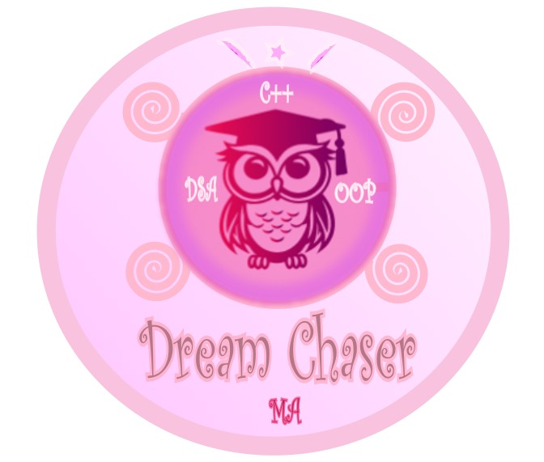

A story of wisdom, transformation, and the courage to chase dreams ✨
A visual identity inspired by growth, learning, and self-discovery.
“Dream Chaser” is more than just a logo, it embodies my personal and academic journey as a lifelong learner who continues to pursue her dreams despite challenges. It reflects the story of resilience, curiosity, and courage to dream beyond limits. 🌙
The 🦉 owl, a timeless symbol of wisdom, represents my dedication to continuous learning. Wearing a 🎓 graduation cap, it symbolizes perseverance, success, and the courage to aim higher.
The elegant inclusion of C++, OOP, and DSA captures my roots in computer science disciplines that shaped my logical thinking and awakened my creativity. 💻
The 🦋 butterfly symbolizes transformation and freedom reminding me that every stage of learning unfolds like wings preparing for flight. It speaks of growth, renewal, and the beauty of embracing change.
Finally, the soft pink tones and circular form evoke calmness and completeness a visual metaphor that learning, like dreaming, is an ever-evolving journey of becoming. 🌸
“Dream Chaser” reminds me that no goal is too far,
when passion becomes the wind beneath your wings. 💫